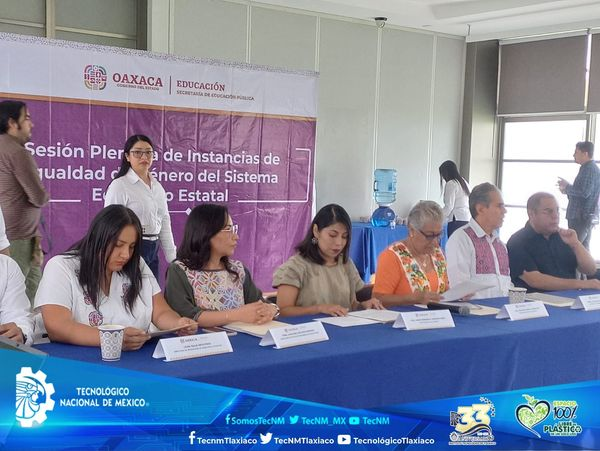
PRESENTE EL INSTITUTO TECNOLÓGICO DE TLAXIACO EN LA PRIMERA SESIÓN PLENARIA DE INSTANCIAS DE IGUALDAD DE GÉNERO DEL SISTEMA EDUCATIVO ESTATAL .
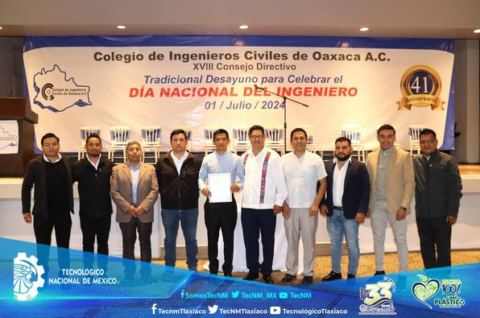
EL TECNM – TLAXIACO PRESENTE EN LA CELEBRACIÓN DEL DIA NACIONAL DEL INGENIERO 2024, ORGANIZADA POR EL COLEGIO DE INGENIEROS CIVILES DE OAXACA.
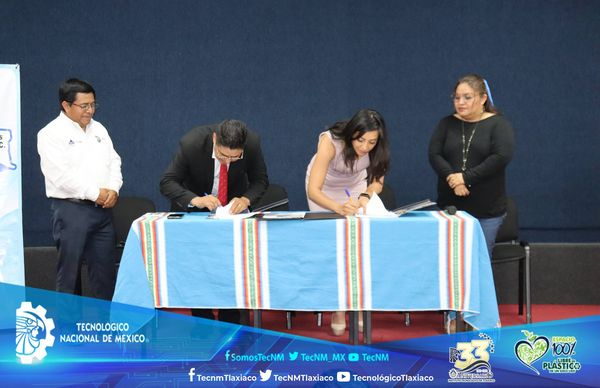
SE CONCRETA LA FIRMA DEL CONVENIO MARCO DE COLABORACIÓN ACADÉMICA, CIENTÍFICA Y TECNOLÓGICA ENTRE EL INSTITUTO TECNOLÓGICO DE TLAXIACO Y EL COLEGIO DE INGENIEROS CIVILES DE OAXACA A. C. V.
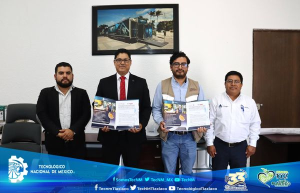
SE FIRMA EL CONVENIO MARCO DE COLABORACIÓN ACADÉMICA, CIENTÍFICA Y TECNOLÓGICA CON EL INSTITUTO TECNOLÓGICO DE TLAXIACO Y LA EMPRESA TRAYLFER S. A. DE C. V.
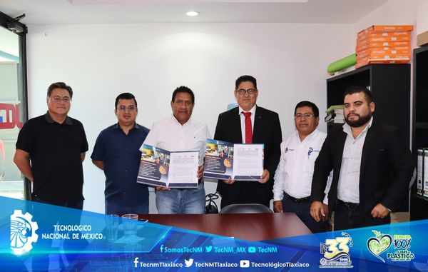
FIRMA DE CONVENIO MARCO DE COLABORACIÓN ACADÉMICA, CIENTÍFICA Y TECNOLÓGICA QUE CELEBRAN POR UNA PARTE EL INSTITUTO TECNOLÓGICO DE TLAXIACO Y JCGV SERVICIOS ESPECIALIZADOS EN CONSTRUCCIÓN Y COMERCIALIZADORA S.A. DE C.V.
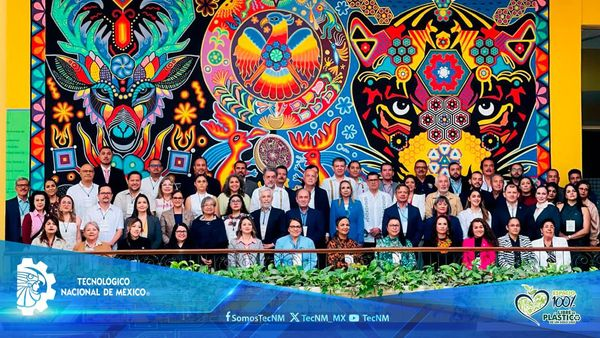
Se llevó a cabo la Reunión Regional Occidente de Autoridades de Educación Superior “Prospectiva de la Demanda de Servicios Educativos y Actualización Curricular para Potenciar el Talento Mexicano”, organizada por la Secretaría de Educación Pública del Estado de Nayarit.
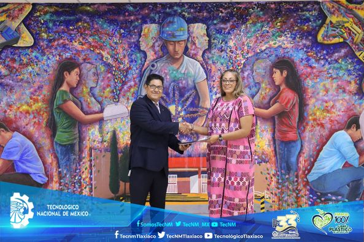
FIRMA DE CONVENIO MARCO DE COLABORACIÓN ACADÉMICA, CIENTÍFICA Y TECNOLÓGICA QUE CELEBRAN POR UNA PARTE EL INSTITUTO TECNOLÓGICO DE TLAXIACO Y LA UNIDAD MÉDICA HIDALGO S. DE R. L. C. V.
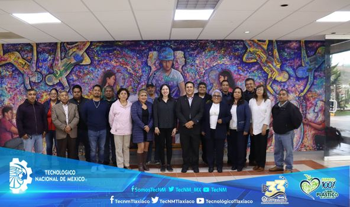
CLAUSURA DE LA CAPACITACIÓN DEL DIPLOMADO DEL MÓDULO II “MARCO NORMATIVO, INTERNACIONAL Y NACIONAL” DE EDUCACIÓN INCLUSIVA, AL PERSONAL DOCENTE DEL TECNM – TLAXIACO.
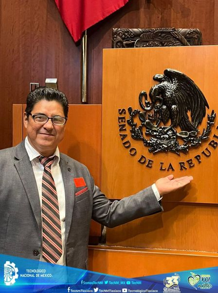
En el marco del 75° aniversario del Tecnológico Nacional de México, la maestra Leticia Ramírez Amaya y el director general de la institución, Ramón Jiménez López, encabezaron la ceremonia de develación de la inscripción: “Tecnológico Nacional de México, por mi patria y por mi bien”, en el Muro de Honor del Senado de la República. 🏫✨
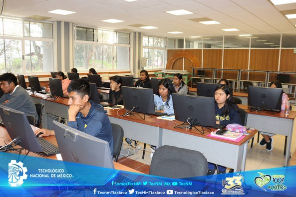
EXAMEN DE ADMISIÓN EN EL INSTITUTO TECNOLÓGICO DE TLAXIACO.
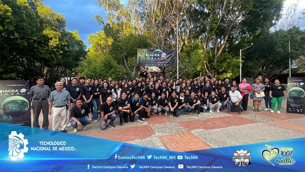
CLAUSURA DEL INTERNET COMPUTER HACKATHON 2024
TECNM OAXACA
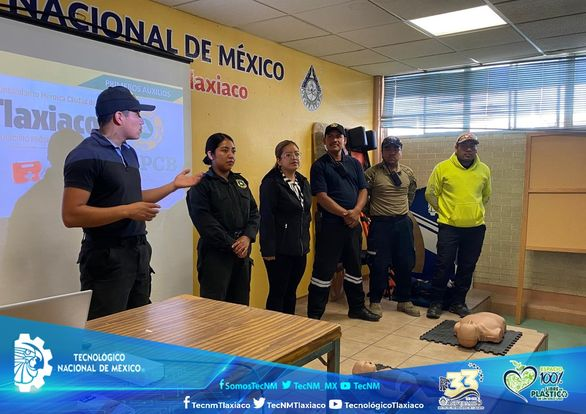
GALERÍA FOTOGRÁFICA DE CAPACITACIÓN EN PRIMEROS AUXILIOS, USO Y MANEJO DE EXTINTORES.SE CAPACITA A INTEGRANTES DE LAS BRIGADAS, EVALUADORES DE EDIFICIO Y JEFES DE PISO DEL TECNM - TLAXIACO, EN PRIMEROS AUXILIOS, USO Y MANEJO DE EXTINTORES.
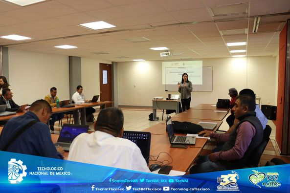
SE IMPARTE CAPACITACIÓN DEL MODULO II DEL DIPLOMADO "MARCO NORMATIVO, INTERNACIONAL Y NACIONAL" DE EDUCACIÓN INCLUSIVA, A DOCENTES DEL TECNM- TLAXIACO.
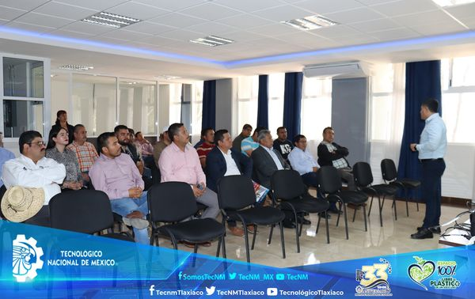
EL INSTITUTO TECNOLÓGICO DE TLAXIACO CELEBRA A LOS PADRES DE ESTA INSTITUCIÓN CON LA CONFERENCIA “IMPORTANCIA DE LA FIGURA PATERNA EN LA FAMILIA”
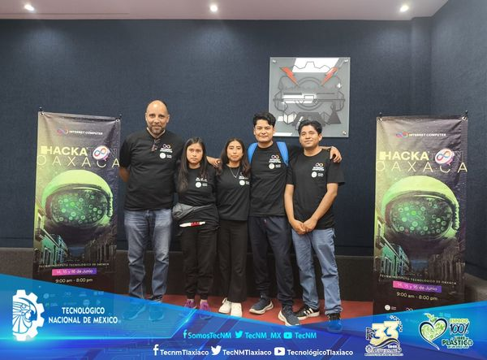
2DO LUGAR PARA ESTUDIANTES DEL INSTITUTO TECNOLÓGICO DE TLAXIACO EN EL EVENTO “INTERNET COMPUTER HACKATHON 2024”.